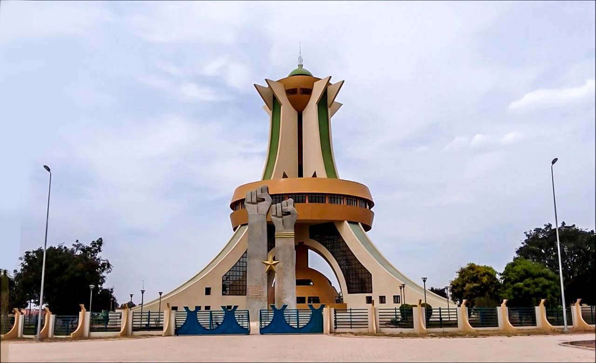
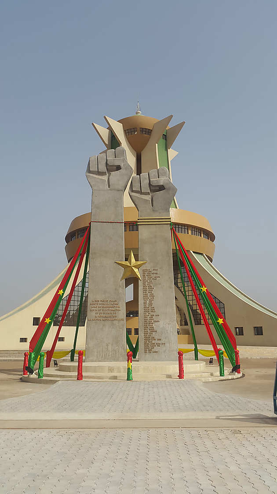
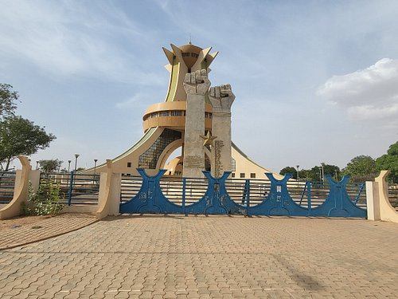

🇧🇫 🇧🇫 🇧🇫 🇧🇫 🇧🇫 🇧🇫 🇧🇫 🇧🇫 🇧🇫 🇧🇫 🇧🇫 🫶🫶⚔️⚔️🇧🇫 🇧🇫 🇧🇫 🇧🇫 MONUMENT DE L'INDEPENDANCE🇧🇫 🇧🇫 🇧🇫 🇧🇫 🇧🇫 🇧🇫 🇧🇫 🇧🇫 🇧🇫 🇧🇫 🇧🇫 ⚔️⚔️🫶🫶
🇧🇫 🇧🇫 DESCRIPTION 🇧🇫 🇧🇫
Flambeau éternel de la liberté Burkinabè span class="highlight">À Ouagadougou, debout comme un géant de fer et de fierté<, se dresse le Monument de l'Indépendance - symbole immortel du combat sacré d'un peuple pour sa liberté.Regardez-le bien. cette colosse de bronze et de pierre n'est pas qu'une simple sculpture. C'est le cri pétrifié d'une nation, le souffle brûlant des héros qui ont dit "Plus jamais l'oppression !" et qui ont arraché leur destin des griffes du colonialisme.
UN HOMMAGE AUX MARTYRS DE LA LIBERTÉ
Chaque courbe de ce monument raconte une histoire :
La flamme éternelle qui ne s'éteint jamais, comme l'esprit de résistance du Burkina.
Les silhouettes sculptées, figées dans l'élan de la lutte, portant haut le drapeau tricolore.L'épée brisée des chaînes, symbole de la victoire contre l'asservissement.
ROUGE Le sang versé
VERT
La terre nourricière
yellow">JAUNE
La lumière de l'espoir
Ici, le vent lui-même semble chanter l'hymne national. Les pas des visiteurs résonnent comme des battements de cœur, synchronisés avec le souvenir des milliers de Burkinabè qui ont marché, combattu, parfois péri, pour qu'aujourd'hui, leur pays respire la liberté."
UN LIEU OÙ L'HISTOIRE VIT ENCORE
Ce n'est pas un simple monument. C'est un sanctuaire.
Les anciens y viennent pour saluer la mémoire des disparus. Les jeunes y viennent pour jurer de protéger cet héritage. Les enfants y apprennent que la liberté ne se mendie pas, elle se conquiert. "Quand le soleil couchant embrase le bronze du monument, on croirait voir danser les ombres des combattants de l'indépendance. Leurs voix murmurent encore : 'Le Burkina Faso est né dans le feu et le sacrifice. Qu'il vive éternellement dans l'honneur et la dignité !'"GLOIRE À CEUX QUI ONT FAIT DE CE PAYS UNE TERRE LIBRE.
GLOIRE À CEUX QUI CONTINUENT DE LE DÉFENDRE.
GLOIRE AU BURKINA FASO, DEBOUT, FIER, INVINCIBLE.
🇧🇫 "LA PATRIE OU LA MORT, NOUS VAINCRONS !" 🇧🇫
Monument de l'Indépendance - Ouagadougou, Burkina Faso
Symbole éternel de notre liberté conquise par le sang et la détermination
🇧🇫 🇧🇫 HISTORIQUE 🇧🇫 🇧🇫
le monument a été conçu dans les années 2000, à l’initiative du gouvernement de Blaise Compaoré, pour célébrer les figures historiques et les martyrs du Burkina Faso. Sa construction débute officiellement en 2002 et s’achève en 2008. Il est situé dans le quartier moderne et administratif de Ouaga 2000, symbole de modernisation du pays à cette époque. Le monument rend hommage : Aux pères de l’indépendance comme Daniel Ouezzin Coulibaly, Nazi Boni, Philippe Zinda Kaboré Aux héros révolutionnaires, notamment Thomas Sankara Aux victimes des luttes populaires, notamment celles de l’insurrection populaire d’octobre 2014 et du coup d’État manqué de 2015.
# *Monument de l'Indépendance de Ouagadougou : Symbole de la Liberté du Burkina Faso* #### *📍 Localisation* Situé au cœur de *Ouagadougou, près de la Place de la Révolution, ce monument est un **emblème national* célébrant la fin de la colonisation française. ### *📜 Histoire et Signification* #### *1. Contexte : L’Indépendance de la Haute-Volta (1960)* - Le *5 août 1960, la **Haute-Volta* (ancien nom du Burkina Faso) obtient son indépendance de la France. - Pour marquer cet événement, le gouvernement érige dans les années *1970-1980* un monument symbolique d'où le monument de l'independance.
#### *2. Construction et Symbolisme* - *Forme* : Une *colonne surmontée d’une flamme*, représentant la liberté et la résistance. - *Inspiration* : Mélange d’architecture moderne…
|  |  |
|---|---|---|
|  < |